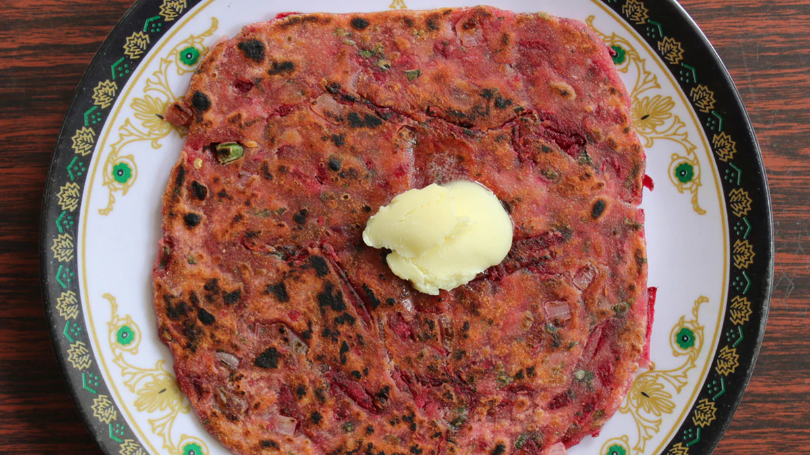

Beetroot Uttapam Recipe
Uttapam is a delicious and wholesome treat. If you want to try a different kind of uttapam, make this beetroot uttapam topped with veggies. The beetroots bring a lovely pink colour to this dish and also add a whole new dimension of flavour.

Ingredients of Beetroot Uttapam
- 2 Cups idli/ dosa batter
- 2 small Beetroots
- 1 Onion, finely chopped
- 1 small Tomato , finely chopped
- 1/2 Capsicum, finely chopped
- 3 Green Chillies, finely chopped
- Oil for cooking
- Salt to taste
- Coriander leaves for garnish
How to Make Beetroot Uttapam
- Grate the beetroots to get thin strands.
- Add the idli/ dosa batter to a bowl, along with the grated beetroot. Add water to thin the batter if required. But remember that uttapams require a thicker batter than regular dosas.
- Mix well to form a pinkish batter.
- Add around ½ tsp of oil to a heated non-stick tawa.
- Ladle a big spoon of the batter onto it, As with regular uttapams, do not spread the batter thinly.
- Add small quantities of the chopped veggies (onions, tomatoes, capsicum, green chillies) on top and lightly press them into the batter.
- Sprinkle a little bit of salt. Add more oil along the edges of the thick uttapam. Cover for a few minutes.
- Lift the uttapam to check if it is slightly brown. Then flip it and cook on the other side too. Take care not to burn the veggies.
- Transfer onto a plate, garnish with coriander and serve with coconut chutney.